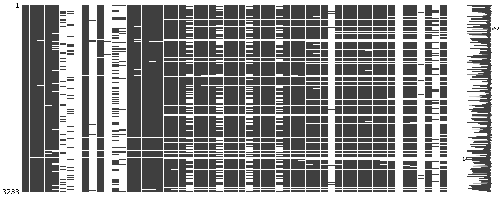
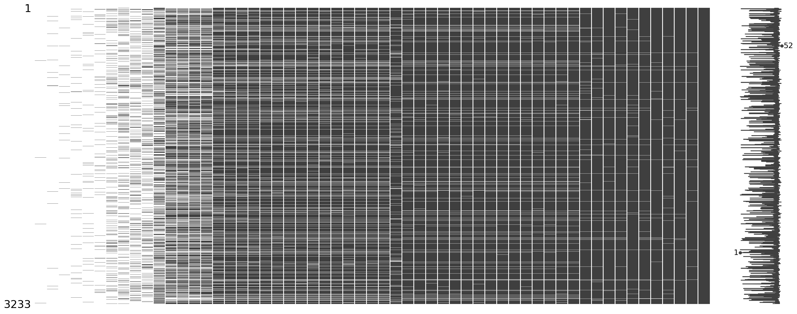
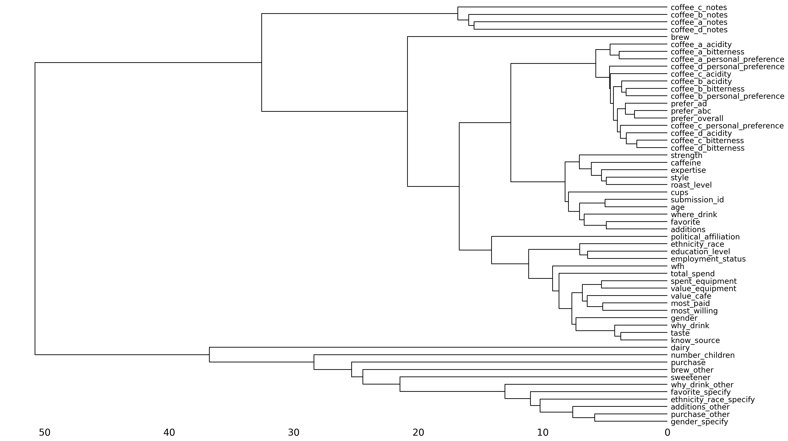
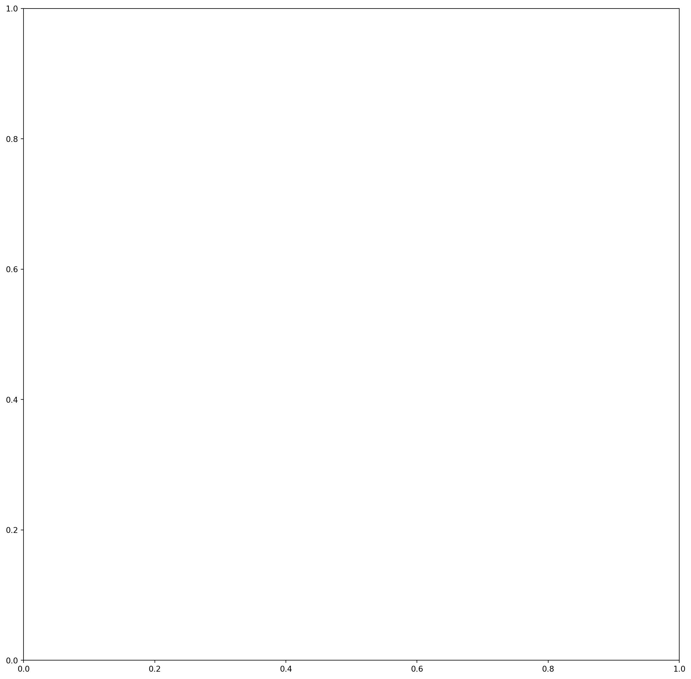

import pandas as pd
import numpy as np
from plotnine import *
from skimpy import skim
from sklearn.model_selection import train_test_split
import matplotlib.pyplot as plt
from pandas.plotting import scatter_matrix
import missingno as msno
# Set random seed
np.random.seed(167)AE 09: Explore coffee taste tests
The Great American Coffee Taste Test
In October 2023, James Hoffmann and coffee company Cometeer held the “Great American Coffee Taste Test” on YouTube, during which viewers were asked to fill out a survey about 4 coffees they ordered from Cometeer for the tasting. Tidy Tuesday published the data set we are using.
coffee_survey = pd.read_csv("data/coffee_survey.csv")
# partition into training and test sets
coffee_train, coffee_test = train_test_split(coffee_survey, test_size=0.2, random_state=167)It includes the following features:
| variable | class | description |
|---|---|---|
| submission_id | character | Submission ID |
| age | character | What is your age? |
| cups | character | How many cups of coffee do you typically drink per day? |
| where_drink | character | Where do you typically drink coffee? |
| brew | character | How do you brew coffee at home? |
| brew_other | character | How else do you brew coffee at home? |
| purchase | character | On the go, where do you typically purchase coffee? |
| purchase_other | character | Where else do you purchase coffee? |
| favorite | character | What is your favorite coffee drink? |
| favorite_specify | character | Please specify what your favorite coffee drink is |
| additions | character | Do you usually add anything to your coffee? |
| additions_other | character | What else do you add to your coffee? |
| dairy | character | What kind of dairy do you add? |
| sweetener | character | What kind of sugar or sweetener do you add? |
| style | character | Before today’s tasting, which of the following best described what kind of coffee you like? |
| strength | character | How strong do you like your coffee? |
| roast_level | character | What roast level of coffee do you prefer? |
| caffeine | character | How much caffeine do you like in your coffee? |
| expertise | numeric | Lastly, how would you rate your own coffee expertise? |
| coffee_a_bitterness | numeric | Coffee A - Bitterness |
| coffee_a_acidity | numeric | Coffee A - Acidity |
| coffee_a_personal_preference | numeric | Coffee A - Personal Preference |
| coffee_a_notes | character | Coffee A - Notes |
| coffee_b_bitterness | numeric | Coffee B - Bitterness |
| coffee_b_acidity | numeric | Coffee B - Acidity |
| coffee_b_personal_preference | numeric | Coffee B - Personal Preference |
| coffee_b_notes | character | Coffee B - Notes |
| coffee_c_bitterness | numeric | Coffee C - Bitterness |
| coffee_c_acidity | numeric | Coffee C - Acidity |
| coffee_c_personal_preference | numeric | Coffee C - Personal Preference |
| coffee_c_notes | character | Coffee C - Notes |
| coffee_d_bitterness | numeric | Coffee D - Bitterness |
| coffee_d_acidity | numeric | Coffee D - Acidity |
| coffee_d_personal_preference | numeric | Coffee D - Personal Preference |
| coffee_d_notes | character | Coffee D - Notes |
| prefer_abc | character | Between Coffee A, Coffee B, and Coffee C which did you prefer? |
| prefer_ad | character | Between Coffee A and Coffee D, which did you prefer? |
| prefer_overall | character | Lastly, what was your favorite overall coffee? |
| wfh | character | Do you work from home or in person? |
| total_spend | character | In total, much money do you typically spend on coffee in a month? |
| why_drink | character | Why do you drink coffee? |
| why_drink_other | character | Other reason for drinking coffee |
| taste | character | Do you like the taste of coffee? |
| know_source | character | Do you know where your coffee comes from? |
| most_paid | character | What is the most you’ve ever paid for a cup of coffee? |
| most_willing | character | What is the most you’d ever be willing to pay for a cup of coffee? |
| value_cafe | character | Do you feel like you’re getting good value for your money when you buy coffee at a cafe? |
| spent_equipment | character | Approximately how much have you spent on coffee equipment in the past 5 years? |
| value_equipment | character | Do you feel like you’re getting good value for your money when you buy coffee at a cafe? |
| gender | character | Gender |
| gender_specify | character | Gender (please specify) |
| education_level | character | Education Level |
| ethnicity_race | character | Ethnicity/Race |
| ethnicity_race_specify | character | Ethnicity/Race (please specify) |
| employment_status | character | Employment Status |
| number_children | character | Number of Children |
| political_affiliation | character | Political Affiliation |
Our ultimate goal on a future assignment is to predict whether or not individuals like coffee D based on their survey responses and taste tests for coffees A-C.1 We will use a binary form of coffee_d_personal_preference variable as our target.
A quick skim of the data:
print(coffee_train.info())
print(coffee_train.describe())
print(coffee_train.isnull().sum())<class 'pandas.core.frame.DataFrame'>
Index: 3233 entries, 633 to 2881
Data columns (total 57 columns):
# Column Non-Null Count Dtype
--- ------ -------------- -----
0 submission_id 3233 non-null object
1 age 3208 non-null object
2 cups 3165 non-null object
3 where_drink 3176 non-null object
4 brew 2921 non-null object
5 brew_other 535 non-null object
6 purchase 550 non-null object
7 purchase_other 24 non-null object
8 favorite 3189 non-null object
9 favorite_specify 87 non-null object
10 additions 3171 non-null object
11 additions_other 43 non-null object
12 dairy 1360 non-null object
13 sweetener 420 non-null object
14 style 3168 non-null object
15 strength 3131 non-null object
16 roast_level 3156 non-null object
17 caffeine 3140 non-null object
18 expertise 3154 non-null float64
19 coffee_a_bitterness 3048 non-null float64
20 coffee_a_acidity 3032 non-null float64
21 coffee_a_personal_preference 3041 non-null float64
22 coffee_a_notes 2068 non-null object
23 coffee_b_bitterness 3033 non-null float64
24 coffee_b_acidity 3021 non-null float64
25 coffee_b_personal_preference 3028 non-null float64
26 coffee_b_notes 1967 non-null object
27 coffee_c_bitterness 3022 non-null float64
28 coffee_c_acidity 3013 non-null float64
29 coffee_c_personal_preference 3022 non-null float64
30 coffee_c_notes 1902 non-null object
31 coffee_d_bitterness 3022 non-null float64
32 coffee_d_acidity 3019 non-null float64
33 coffee_d_personal_preference 3019 non-null float64
34 coffee_d_notes 2073 non-null object
35 prefer_abc 3025 non-null object
36 prefer_ad 3018 non-null object
37 prefer_overall 3024 non-null object
38 wfh 2841 non-null object
39 total_spend 2823 non-null object
40 why_drink 2867 non-null object
41 why_drink_other 132 non-null object
42 taste 2862 non-null object
43 know_source 2858 non-null object
44 most_paid 2833 non-null object
45 most_willing 2820 non-null object
46 value_cafe 2810 non-null object
47 spent_equipment 2812 non-null object
48 value_equipment 2802 non-null object
49 gender 2825 non-null object
50 gender_specify 10 non-null object
51 education_level 2764 non-null object
52 ethnicity_race 2748 non-null object
53 ethnicity_race_specify 80 non-null object
54 employment_status 2747 non-null object
55 number_children 682 non-null object
56 political_affiliation 2645 non-null object
dtypes: float64(13), object(44)
memory usage: 1.4+ MB
None
expertise coffee_a_bitterness coffee_a_acidity \
count 3154.000000 3048.000000 3032.000000
mean 5.693088 2.127297 3.648747
std 1.955330 0.942838 0.971537
min 1.000000 1.000000 1.000000
25% 5.000000 1.000000 3.000000
50% 6.000000 2.000000 4.000000
75% 7.000000 3.000000 4.000000
max 10.000000 5.000000 5.000000
coffee_a_personal_preference coffee_b_bitterness coffee_b_acidity \
count 3041.000000 3033.000000 3021.000000
mean 3.317330 3.013848 2.226084
std 1.189424 0.990958 0.866328
min 1.000000 1.000000 1.000000
25% 2.000000 2.000000 2.000000
50% 3.000000 3.000000 2.000000
75% 4.000000 4.000000 3.000000
max 5.000000 5.000000 5.000000
coffee_b_personal_preference coffee_c_bitterness coffee_c_acidity \
count 3028.000000 3022.000000 3013.000000
mean 3.072655 3.085043 2.358447
std 1.116299 0.998367 0.919191
min 1.000000 1.000000 1.000000
25% 2.000000 2.000000 2.000000
50% 3.000000 3.000000 2.000000
75% 4.000000 4.000000 3.000000
max 5.000000 5.000000 5.000000
coffee_c_personal_preference coffee_d_bitterness coffee_d_acidity \
count 3022.000000 3022.000000 3019.000000
mean 3.066512 2.155526 3.875787
std 1.128551 1.070952 1.000070
min 1.000000 1.000000 1.000000
25% 2.000000 1.000000 3.000000
50% 3.000000 2.000000 4.000000
75% 4.000000 3.000000 5.000000
max 5.000000 5.000000 5.000000
coffee_d_personal_preference
count 3019.000000
mean 3.395495
std 1.447305
min 1.000000
25% 2.000000
50% 4.000000
75% 5.000000
max 5.000000
submission_id 0
age 25
cups 68
where_drink 57
brew 312
brew_other 2698
purchase 2683
purchase_other 3209
favorite 44
favorite_specify 3146
additions 62
additions_other 3190
dairy 1873
sweetener 2813
style 65
strength 102
roast_level 77
caffeine 93
expertise 79
coffee_a_bitterness 185
coffee_a_acidity 201
coffee_a_personal_preference 192
coffee_a_notes 1165
coffee_b_bitterness 200
coffee_b_acidity 212
coffee_b_personal_preference 205
coffee_b_notes 1266
coffee_c_bitterness 211
coffee_c_acidity 220
coffee_c_personal_preference 211
coffee_c_notes 1331
coffee_d_bitterness 211
coffee_d_acidity 214
coffee_d_personal_preference 214
coffee_d_notes 1160
prefer_abc 208
prefer_ad 215
prefer_overall 209
wfh 392
total_spend 410
why_drink 366
why_drink_other 3101
taste 371
know_source 375
most_paid 400
most_willing 413
value_cafe 423
spent_equipment 421
value_equipment 431
gender 408
gender_specify 3223
education_level 469
ethnicity_race 485
ethnicity_race_specify 3153
employment_status 486
number_children 2551
political_affiliation 588
dtype: int64Examining continuous variables
Your turn: Examine expertise using a histogram and appropriate binwidth. Describe the features of this variable.
# add code hereAdd response here.
Your turn: Each coffee has three numeric ratings by the respondents: bitterness, acidity, and personal preference. Create a histogram for each of these characteristics, faceted by coffee type. What do you notice?
Wrangling the data for easier visualization
The original structure of the data is one column for each coffee for each characteristic. You could create separate graphs for each of the 12 columns, but that seems like a lot of work. Instead, consider using the pivot_longer() function to restructure the data to one row per coffee per characteristic. This will make it easier to create the faceted histograms.
# Select columns starting with "coffee" but not ending with "notes"
coffee_cols = [col for col in coffee_train.columns
if col.startswith('coffee_') and not col.endswith('_notes')]
# Reshape the data using melt (pandas equivalent of pivot_longer)
coffee_long = coffee_train[coffee_cols].melt(
var_name='coffee_measure',
value_name='value'
)
# Split the column names to separate coffee type and measure
coffee_long[['coffee', 'measure']] = coffee_long['coffee_measure'].str.replace('coffee_', '').str.split('_', n=1, expand=True)
# Drop the original combined column and reorder
coffee_long = coffee_long[['coffee', 'measure', 'value']]
coffee_long| coffee | measure | value | |
|---|---|---|---|
| 0 | a | bitterness | 1.0 |
| 1 | a | bitterness | 3.0 |
| 2 | a | bitterness | 1.0 |
| 3 | a | bitterness | 1.0 |
| 4 | a | bitterness | 1.0 |
| ... | ... | ... | ... |
| 38791 | d | personal_preference | 5.0 |
| 38792 | d | personal_preference | 1.0 |
| 38793 | d | personal_preference | 2.0 |
| 38794 | d | personal_preference | 5.0 |
| 38795 | d | personal_preference | 4.0 |
38796 rows × 3 columns
# add code hereAdd response here.
Examining categorical variables
Your turn: Examine prefer_overall graphically. Record your observations.
# add code hereAdd response here.
Your turn: Examine cups, brew, and roast_level. Record your observations, in particular how you might need to handle these variables in the modeling stage.
# add code hereAdd response here.
# add code hereAdd response here.
# add code hereAdd response here.
Making comparisons
Your turn: Compare the relationship between coffee_d_personal_preference and the respondents’ preferred roast levels. Use a proportional bar chart to visualize the relationship.
Tip
Use position='fill' with geom_bar() to automatically calculate percentages for the chart.
# add code hereAdd response here.
Your turn: Examine the relationship between the respondents’ numeric ratings for acidity, bitterness, and personal preference for each of the four coffees and compare to their overall preference. Record your observations.
Add response here.
Data quality
Missingness
Demonstration: Use missingno to visualize missingness patterns in the data set.
# Quick glance of missingness by row/column order
msno.matrix(coffee_train)
# Reorder columns based on % missing
msno.matrix(coffee_train.loc[:, coffee_train.isnull().sum().sort_values(ascending=False).index])
# Cluster rows based on similarity in missingness patterns
msno.dendrogram(coffee_train)
Your turn: Record your observations on the missingness patterns in the data set. What variables have high missingness? Is this surprising? What might you do to variables or observations with high degrees of missingness?
Add response here.
Outliers
Demonstration: Generate a scatterplot matrix for all the numeric variables in the data set.2
# Get all numeric columns
numeric_cols = coffee_train.select_dtypes(include=[np.number]).columns
# Create scatterplot matrix using pandas
fig, axes = plt.subplots(figsize=(15, 15))
scatter_matrix(coffee_train[numeric_cols], alpha=0.6, figsize=(15, 15), diagonal='hist')
plt.show()

Your turn: Examine the distribution of roast/gender and roast/cups. Describe the patterns you see and anything that is of particular interest given the model we will estimate.
# add code here# add code hereAdd response here.